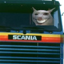

Wesh is a legend that is known in several communities, for example in MD Group where Minh Duy aka Nubbie Duy, StarPer aka the weshper and Domonkos aka domi nub are the kings of wesh. It is a magnificent emoji that we use in our daily lives.
There are many types, such as:
Do you want to see some of what I just said ? Here you are.
Wesh is very varied, we would stay for years if we were to list all of the types. If you want to see some more, join the best VTC's Discord server.